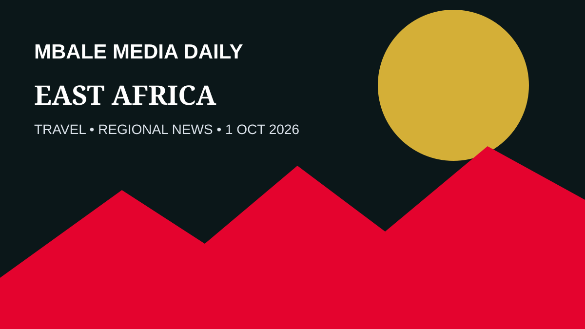
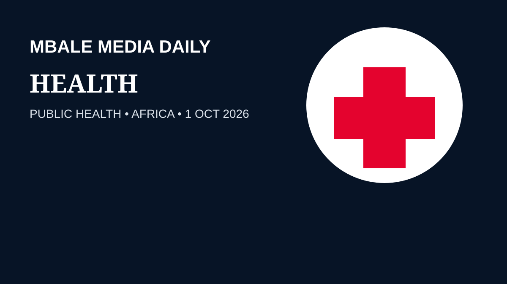
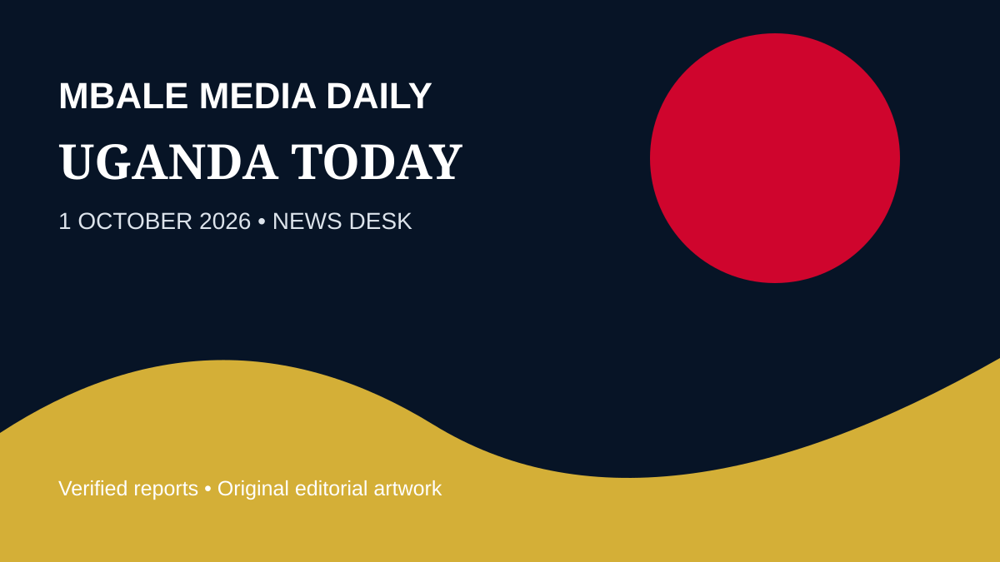
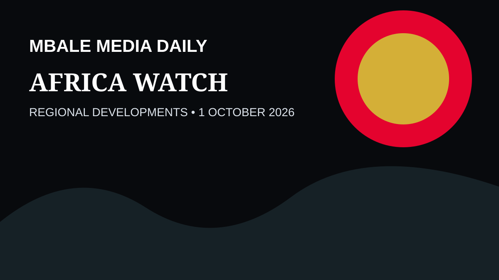

EASTERN UGANDA • BUSINESS
UDB urges more long-term financing for Eastern Uganda tourism
Uganda Development Bank is calling for patient capital to help tourism operators develop attractions, accommodation and services across the region.
Source: Uganda Broadcasting Corporation, October 2, 2026.

UGANDA • TRAVEL
South Africa opens electronic visa services for Ugandan travellers
Eligible Ugandan travellers can now access South Africa’s electronic visa service before travelling.
Source: Daily Monitor, October 2, 2026.
SPORTS • AFRICA
East Africa races to prepare for AFCON 2027
Kenya, Uganda and Tanzania are moving through the final preparation period for the 2027 Africa Cup of Nations.
Source: Al Jazeera, October 2, 2026.

HEALTH • UGANDA
Government warns against interference with measles vaccination
Authorities have warned against actions that could disrupt the national measles vaccination campaign.
Source: Daily Monitor, October 2, 2026.

UGANDA • NATIONAL
Digital number-plate backlog reported cleared
The latest national update says the backlog affecting digital number-plate issuance has been cleared.
Source: Daily Monitor, October 2, 2026.

AFRICA • ETHIOPIA
Explosions reported in Addis Ababa amid northern conflict
Reuters reported overnight explosions in the capital and noted that claims of drone strikes could not be independently verified.
Source: Reuters, October 2, 2026.